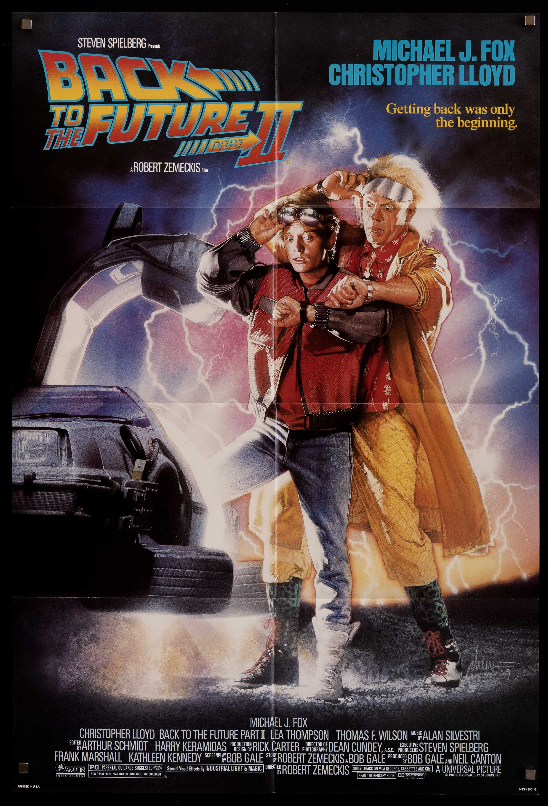

Volver al futuro II
Acción | Aventura
Tras visitar 2015, Marty McFly vuelve a 1955 para evitar los desastrosos cambios
de 1985... sin interferir con su primer viaje.
Director: Robert Zemeckis
Reparto: Michael J. Fox, Christopher Lloyd, Lea Thompson
Duración: 1h 48m